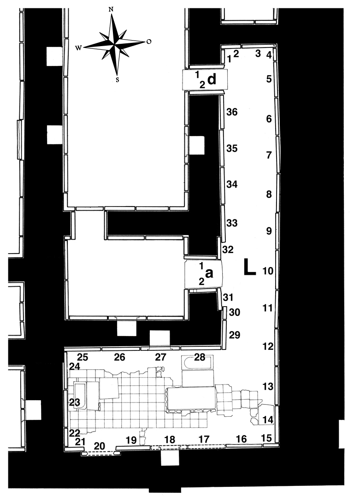

Room L
The room is L-shaped and a mirror image of Room I, separated from it by the small chamber K. Among the 36 slabs Layard found here, two had recesses (L-18 and L-27) and these two are the only ones showing more than one figure – two genies each below the recess.
Layard sent only one relief from this room (L-20) to the British Museum. A second excavation of the room was started by Mallowan and completed by Abdul-Hamid. During the course of this work a number of reliefs was rediscovered in situ (L-9, L-12 – L-14, L-16, L-19, L-23 – L-29). Some of the figures were found, however, to be missing either their heads (L-3, L-9 – L-16) or their entire upper bodies. With few exceptions (L-3, L-9, L-12, L-13, L-16) those missing parts can be shown to have been among the pieces that Hormuzd Rassam gave to several private persons and American missionaries in 1852. The same is true for several slabs that were removed completely (L-5 – L-8, L-10 – L-13, L-17 and probably also L-35 & L-36). Two more reliefs (L-33 & L-34) were taken after the end of official excavations.
Click on L in the middle of the room to see all panels positioned in their respective walls, or on the individual panels along the inner walls and in the entryways to go to CDLI pages associated with them.
 |
Relief Slabs by Collection (duplication results from individual fragments in different places) |